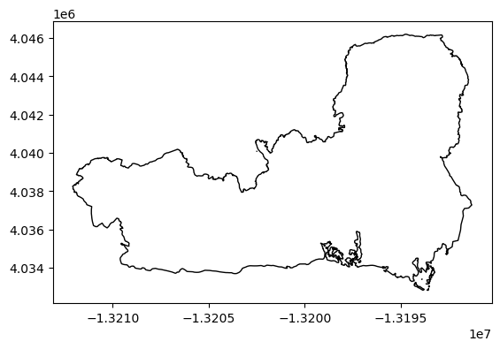
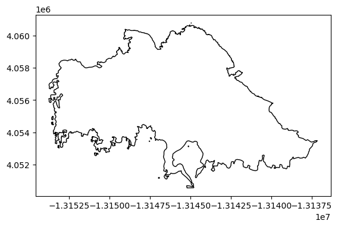
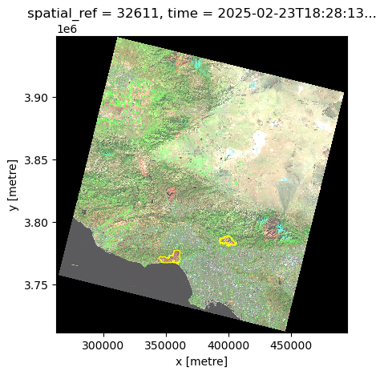
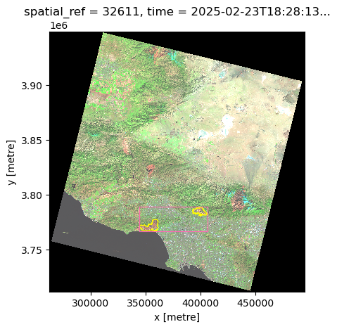
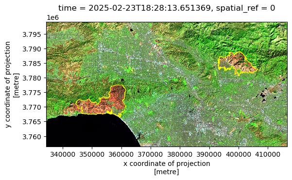

import os
import numpy as np
import pandas as pd
import geopandas as gpd
import xarray as xr
import rioxarray as rioxr
import matplotlib.pyplot as plt
from shapely.geometry import Polygon
from shapely import box
from pystac_client import Client
import planetary_computer
import odc.stac
from IPython.display import ImageFire perimeters exploration
palisades = gpd.read_file(os.path.join('data', 'Palisades_Perimeter_20250121', 'Palisades_Perimeter_20250121.shp'))
palisades.plot(color='None')
eaton = gpd.read_file(os.path.join('data', 'Eaton_Perimeter_20250121', 'Eaton_Perimeter_20250121.shp'))
eaton.plot(color='None')
palisades| OBJECTID | type | Shape__Are | Shape__Len | geometry | |
|---|---|---|---|---|---|
| 0 | 1 | Heat Perimeter | 1.182082e+03 | 267.101144 | POLYGON ((-13193543.302 4032913.077, -13193543... |
| 1 | 2 | Heat Perimeter | 2.222488e+03 | 185.498783 | POLYGON ((-13193524.155 4033067.953, -13193524... |
| 2 | 3 | Heat Perimeter | 2.101172e+01 | 22.412814 | POLYGON ((-13193598.085 4033158.222, -13193598... |
| 3 | 4 | Heat Perimeter | 2.149922e+02 | 76.639180 | POLYGON ((-13193654.249 4033146.033, -13193656... |
| 4 | 5 | Heat Perimeter | 4.420345e+04 | 1569.259764 | POLYGON ((-13194209.580 4033236.320, -13194209... |
| 5 | 6 | Heat Perimeter | 3.734375e+01 | 25.061294 | POLYGON ((-13193904.616 4033404.984, -13193901... |
| 6 | 7 | Heat Perimeter | 1.183555e+02 | 46.890360 | POLYGON ((-13193893.019 4033415.709, -13193889... |
| 7 | 8 | Heat Perimeter | 1.686719e+01 | 16.860287 | POLYGON ((-13193383.225 4033823.427, -13193385... |
| 8 | 9 | Heat Perimeter | 1.766301e+03 | 264.850402 | POLYGON ((-13195772.046 4033792.029, -13195780... |
| 9 | 10 | Heat Perimeter | 7.939795e+04 | 2620.515743 | POLYGON ((-13193305.036 4033646.585, -13193309... |
| 10 | 11 | Heat Perimeter | 2.207031e+01 | 21.680935 | POLYGON ((-13193409.102 4034028.716, -13193409... |
| 11 | 12 | Heat Perimeter | 4.358203e+01 | 26.750707 | POLYGON ((-13193541.632 4034055.156, -13193547... |
| 12 | 13 | Heat Perimeter | 9.960938e+00 | 14.600921 | POLYGON ((-13193552.653 4034070.739, -13193552... |
| 13 | 14 | Heat Perimeter | 2.114520e+03 | 192.800226 | POLYGON ((-13193446.239 4034103.677, -13193440... |
| 14 | 15 | Heat Perimeter | 3.366484e+02 | 70.035412 | POLYGON ((-13197642.850 4034194.065, -13197654... |
| 15 | 16 | Heat Perimeter | 4.423094e+03 | 302.598897 | POLYGON ((-13197535.054 4034216.410, -13197517... |
| 16 | 17 | Heat Perimeter | 2.091719e+02 | 56.745731 | POLYGON ((-13192645.819 4034740.838, -13192638... |
| 17 | 18 | Heat Perimeter | 4.726328e+02 | 88.390067 | POLYGON ((-13198142.029 4034721.990, -13198146... |
| 18 | 19 | Heat Perimeter | 2.762047e+03 | 215.689271 | POLYGON ((-13198991.338 4035208.157, -13198952... |
| 19 | 20 | Heat Perimeter | 1.149883e+02 | 41.844925 | POLYGON ((-13202494.948 4040091.194, -13202494... |
| 20 | 24 | Heat Perimeter | 1.420688e+08 | 105530.363538 | POLYGON ((-13194545.690 4046129.060, -13194518... |
eaton| OBJECTID | type | Shape__Are | Shape__Len | geometry | |
|---|---|---|---|---|---|
| 0 | 1 | Heat Perimeter | 2.206266e+03 | 270.199719 | POLYGON ((-13146936.686 4051222.067, -13146932... |
| 1 | 2 | Heat Perimeter | 2.071021e+04 | 839.204218 | POLYGON ((-13150835.463 4052713.929, -13150831... |
| 2 | 3 | Heat Perimeter | 3.639238e+03 | 250.304502 | POLYGON ((-13153094.697 4053057.596, -13153113... |
| 3 | 4 | Heat Perimeter | 1.464551e+03 | 148.106792 | POLYGON ((-13145097.740 4053118.235, -13145100... |
| 4 | 5 | Heat Perimeter | 4.132754e+03 | 247.960744 | POLYGON ((-13153131.126 4053196.882, -13153131... |
| 5 | 6 | Heat Perimeter | 8.345547e+02 | 107.859955 | POLYGON ((-13147517.359 4053437.387, -13147524... |
| 6 | 7 | Heat Perimeter | 2.881172e+02 | 70.041598 | POLYGON ((-13148298.311 4053574.481, -13148298... |
| 7 | 8 | Heat Perimeter | 2.879512e+03 | 275.409855 | POLYGON ((-13147475.154 4053666.513, -13147472... |
| 8 | 9 | Heat Perimeter | 8.388641e+04 | 1880.918469 | POLYGON ((-13151028.496 4053701.359, -13151024... |
| 9 | 10 | Heat Perimeter | 6.839698e+04 | 1518.792972 | POLYGON ((-13153173.289 4053740.672, -13153173... |
| 10 | 11 | Heat Perimeter | 1.992648e+03 | 179.590377 | POLYGON ((-13152836.421 4054047.633, -13152818... |
| 11 | 12 | Heat Perimeter | 5.759844e+03 | 394.342477 | POLYGON ((-13153545.207 4054574.885, -13153545... |
| 12 | 13 | Heat Perimeter | 4.320863e+03 | 265.380438 | POLYGON ((-13153505.926 4054586.603, -13153518... |
| 13 | 14 | Heat Perimeter | 1.410842e+04 | 576.750228 | POLYGON ((-13153492.776 4054999.493, -13153492... |
| 14 | 15 | Heat Perimeter | 2.405430e+02 | 59.202170 | POLYGON ((-13142301.271 4057595.264, -13142314... |
| 15 | 16 | Heat Perimeter | 1.045547e+02 | 44.121115 | POLYGON ((-13146660.765 4059591.793, -13146658... |
| 16 | 17 | Heat Perimeter | 8.781250e+00 | 13.404382 | POLYGON ((-13146670.945 4059609.268, -13146675... |
| 17 | 18 | Heat Perimeter | 8.314779e+07 | 97603.986189 | POLYGON ((-13144761.654 4060573.762, -13144749... |
| 18 | 19 | Heat Perimeter | 1.032082e+03 | 136.435084 | POLYGON ((-13145016.708 4060604.559, -13145023... |
| 19 | 20 | Heat Perimeter | 1.283438e+02 | 51.203209 | POLYGON ((-13144942.236 4060781.944, -13144942... |
print(eaton.crs)
print(palisades.crs)EPSG:3857
EPSG:3857Retrieve Landsat imagery
Look for Landsat 2 imagery over the Eaton and Pallisades fire during February 2025. The fires took place during January 2025.
palisades_bbox = palisades.to_crs('epsg:4326').total_bounds.tolist() # [minx, miny, maxx, maxy]
print(palisades_bbox)[-118.68616028345444, 34.029938999912595, -118.49943999984302, 34.129359000207145]# GET ITEM
# https://planetarycomputer.microsoft.com/dataset/landsat-c2-l2#Example-Notebook
# access catalog
catalog = Client.open(
"https://planetarycomputer.microsoft.com/api/stac/v1",
modifier=planetary_computer.sign_inplace,
)
# Temporal range of interest
time_range = "2025-02-02/2025-02-27"
search = catalog.search(
collections=["landsat-c2-l2"],
bbox=palisades_bbox,
datetime=time_range,
query={"eo:cloud_cover": {"lt": 10}},
)
items = search.item_collection()
print(f"Returned {len(items)} Items")Returned 4 Itemsitem = items[0]
Image(url=item.assets["rendered_preview"].href, width=500)
item = items[1]
Image(url=item.assets["rendered_preview"].href, width=500)
item = items[2]
Image(url=item.assets["rendered_preview"].href, width=500)
item = items[3]
Image(url=item.assets["rendered_preview"].href, width=500)
for item in items:
print(item.datetime)
# Selected Febryary 23 item for analysis
item = items[1]2025-02-23 18:28:37.542408+00:00
2025-02-23 18:28:13.651369+00:00
2025-02-15 18:28:55.387569+00:00
2025-02-15 18:28:31.496552+00:00Subset bands
The data is too big and for this exercise we only need red, green, blue, near-infrared and short-wave infrared.
More information on Landsat bands: https://www.usgs.gov/media/images/common-landsat-band-combinations https://www.usgs.gov/faqs/what-are-band-designations-landsat-satellites
# Item assets
max_key_length = len(max(item.assets, key=len))
for key in item.assets.keys():
print(f"{key.rjust(max_key_length)} -- {item.assets[key].title}") qa -- Surface Temperature Quality Assessment Band
ang -- Angle Coefficients File
red -- Red Band
blue -- Blue Band
drad -- Downwelled Radiance Band
emis -- Emissivity Band
emsd -- Emissivity Standard Deviation Band
trad -- Thermal Radiance Band
urad -- Upwelled Radiance Band
atran -- Atmospheric Transmittance Band
cdist -- Cloud Distance Band
green -- Green Band
nir08 -- Near Infrared Band 0.8
lwir11 -- Surface Temperature Band
swir16 -- Short-wave Infrared Band 1.6
swir22 -- Short-wave Infrared Band 2.2
coastal -- Coastal/Aerosol Band
mtl.txt -- Product Metadata File (txt)
mtl.xml -- Product Metadata File (xml)
mtl.json -- Product Metadata File (json)
qa_pixel -- Pixel Quality Assessment Band
qa_radsat -- Radiometric Saturation and Terrain Occlusion Quality Assessment Band
qa_aerosol -- Aerosol Quality Assessment Band
tilejson -- TileJSON with default rendering
rendered_preview -- Rendered previewbands_of_interest = ['red', 'green', 'blue', 'nir08', 'swir22']
raw_data = odc.stac.stac_load(
[item], bands=bands_of_interest
).isel(time=0)
raw_data<xarray.Dataset> Size: 612MB
Dimensions: (y: 7891, x: 7751)
Coordinates:
* y (y) float64 63kB 3.949e+06 3.949e+06 ... 3.712e+06 3.712e+06
* x (x) float64 62kB 2.625e+05 2.625e+05 ... 4.95e+05 4.95e+05
spatial_ref int32 4B 32611
time datetime64[ns] 8B 2025-02-23T18:28:13.651369
Data variables:
red (y, x) uint16 122MB 0 0 0 0 0 0 0 0 0 0 ... 0 0 0 0 0 0 0 0 0 0
green (y, x) uint16 122MB 0 0 0 0 0 0 0 0 0 0 ... 0 0 0 0 0 0 0 0 0 0
blue (y, x) uint16 122MB 0 0 0 0 0 0 0 0 0 0 ... 0 0 0 0 0 0 0 0 0 0
nir08 (y, x) uint16 122MB 0 0 0 0 0 0 0 0 0 0 ... 0 0 0 0 0 0 0 0 0 0
swir22 (y, x) uint16 122MB 0 0 0 0 0 0 0 0 0 0 ... 0 0 0 0 0 0 0 0 0 0# Save intermediate output since previous band selection takes time
# THIS IS NOT PROPERLY SAVED: THE GEOREFERENCE IS LOST
raw_data.to_netcdf(os.path.join('data','landsat8-2025-02-23-LA-simplified.nc'))# Plot true color image
raw_data[['red','green','blue']].to_array().plot.imshow(robust=True)
False color imagery with fire perimeters
fig, ax = plt.subplots()
raw_data[['swir22','nir08','red']].to_array().plot.imshow(ax=ax, robust=True)
palisades.to_crs(raw_data.rio.crs).plot(ax=ax, color='none', edgecolor='yellow', linewidth = 0.8)
eaton.to_crs(raw_data.rio.crs).plot(ax=ax, color='none', edgecolor='yellow', linewidth = 0.8)
Data clipping
False color iamgery is ok, but the perimeters are too small relative to the scene extension. So I will clip the scene to a more reasonable area of interest.
# Merge files into single geodataframe for ease of processing
fires = pd.concat([eaton, palisades], ignore_index=True)
# Create fires bounding box
fires_bbox = (fires
.to_crs(raw_data.rio.crs)
.total_bounds
)
fires_bbox = gpd.GeoDataFrame(geometry = [box(*fires_bbox)],
crs = raw_data.rio.crs)| geometry | |
|---|---|
| 0 | POLYGON ((406646.849 3766517.468, 406646.849 3... |
# Examine fire scars, perimeters and bounding box on false color image
fig, ax = plt.subplots()
raw_data[['swir22','nir08','red']].to_array().plot.imshow(ax=ax, robust=True)
fires.to_crs(raw_data.rio.crs).plot(ax=ax, color='none', edgecolor='yellow', linewidth = 0.8)
fires_bbox.plot(ax=ax, color='none', edgecolor='hotpink', linewidth=0.8)
# Fire perimeters, scars, and a 10,000 m buffer around bbox on false color iamage
fig, ax = plt.subplots()
raw_data[['swir22','nir08','red']].to_array().plot.imshow(ax=ax, robust=True)
fires.to_crs(raw_data.rio.crs).plot(ax=ax, color='none', edgecolor='yellow', linewidth = 0.8)
fires_bbox.buffer(10000, join_style='mitre').plot(ax=ax, color='none', edgecolor='hotpink', linewidth = 1)
# Clip raster data to 10,000m buffer around fire perimeters bbox
aoi = raw_data.rio.clip(fires_bbox.buffer(10000, join_style='mitre'))New plots with clipped raster
fig, ax = plt.subplots()
aoi[['swir22','nir08','red']].to_array().plot.imshow(ax=ax, robust=True)
fires.to_crs(raw_data.rio.crs).plot(ax=ax, color='none', edgecolor='yellow', linewidth = 0.8)
aoi[['red','green','blue']].to_array().plot.imshow(robust=True)
Save data and confirm
Had to install netCDF4 in the EDS-220 env to write the data: conda install -c conda-forge netCDF4
Had to install in the EDS-220 env to read in data: conda install -c conda-forge libgdal-hdf5
Writing and reading needs to be fixed: the geo-referencing is lost. spatial_ref coordinate is 0.
# Save intermediate output since previous band selection takes time
aoi.to_netcdf(os.path.join('data','landsat8-2025-02-23-palisades-eaton.nc'))data = rioxr.open_rasterio(os.path.join('data','landsat8-2025-02-23-palisades-eaton.nc'))
data/Users/galaz-garcia/opt/anaconda3/envs/eds220-env/lib/python3.11/site-packages/rasterio/__init__.py:356: NotGeoreferencedWarning: Dataset has no geotransform, gcps, or rpcs. The identity matrix will be returned.
dataset = DatasetReader(path, driver=driver, sharing=sharing, **kwargs)
/Users/galaz-garcia/opt/anaconda3/envs/eds220-env/lib/python3.11/site-packages/rioxarray/_io.py:1132: NotGeoreferencedWarning: Dataset has no geotransform, gcps, or rpcs. The identity matrix will be returned.
warnings.warn(str(rio_warning.message), type(rio_warning.message)) # type: ignore
/Users/galaz-garcia/opt/anaconda3/envs/eds220-env/lib/python3.11/site-packages/rasterio/__init__.py:356: NotGeoreferencedWarning: Dataset has no geotransform, gcps, or rpcs. The identity matrix will be returned.
dataset = DatasetReader(path, driver=driver, sharing=sharing, **kwargs)
/Users/galaz-garcia/opt/anaconda3/envs/eds220-env/lib/python3.11/site-packages/rioxarray/_io.py:1132: NotGeoreferencedWarning: Dataset has no geotransform, gcps, or rpcs. The identity matrix will be returned.
warnings.warn(str(rio_warning.message), type(rio_warning.message)) # type: ignore
/Users/galaz-garcia/opt/anaconda3/envs/eds220-env/lib/python3.11/site-packages/rasterio/__init__.py:356: NotGeoreferencedWarning: Dataset has no geotransform, gcps, or rpcs. The identity matrix will be returned.
dataset = DatasetReader(path, driver=driver, sharing=sharing, **kwargs)
/Users/galaz-garcia/opt/anaconda3/envs/eds220-env/lib/python3.11/site-packages/rioxarray/_io.py:1132: NotGeoreferencedWarning: Dataset has no geotransform, gcps, or rpcs. The identity matrix will be returned.
warnings.warn(str(rio_warning.message), type(rio_warning.message)) # type: ignore
/Users/galaz-garcia/opt/anaconda3/envs/eds220-env/lib/python3.11/site-packages/rasterio/__init__.py:356: NotGeoreferencedWarning: Dataset has no geotransform, gcps, or rpcs. The identity matrix will be returned.
dataset = DatasetReader(path, driver=driver, sharing=sharing, **kwargs)
/Users/galaz-garcia/opt/anaconda3/envs/eds220-env/lib/python3.11/site-packages/rioxarray/_io.py:1132: NotGeoreferencedWarning: Dataset has no geotransform, gcps, or rpcs. The identity matrix will be returned.
warnings.warn(str(rio_warning.message), type(rio_warning.message)) # type: ignore
/Users/galaz-garcia/opt/anaconda3/envs/eds220-env/lib/python3.11/site-packages/rasterio/__init__.py:356: NotGeoreferencedWarning: Dataset has no geotransform, gcps, or rpcs. The identity matrix will be returned.
dataset = DatasetReader(path, driver=driver, sharing=sharing, **kwargs)
/Users/galaz-garcia/opt/anaconda3/envs/eds220-env/lib/python3.11/site-packages/rioxarray/_io.py:1132: NotGeoreferencedWarning: Dataset has no geotransform, gcps, or rpcs. The identity matrix will be returned.
warnings.warn(str(rio_warning.message), type(rio_warning.message)) # type: ignore<xarray.Dataset> Size: 39MB
Dimensions: (band: 1, x: 2742, y: 1418)
Coordinates:
* band (band) int64 8B 1
* x (x) float64 22kB 0.5 1.5 2.5 ... 2.74e+03 2.74e+03 2.742e+03
* y (y) float64 11kB 0.5 1.5 2.5 ... 1.416e+03 1.416e+03 1.418e+03
spatial_ref int64 8B 0
Data variables:
blue (band, y, x) uint16 8MB ...
green (band, y, x) uint16 8MB ...
nir08 (band, y, x) uint16 8MB ...
red (band, y, x) uint16 8MB ...
swir22 (band, y, x) uint16 8MB ...
Attributes: (12/65)
blue_coordinates: time
blue_grid_mapping: spatial_ref
blue__FillValue: 0
blue__Netcdf4Coordinates: 0 1
green_coordinates: time
green_grid_mapping: spatial_ref
... ...
y_standard_name: projection_y_coordinate
y_units: metre
y__FillValue: nan
y__Netcdf4Coordinates: 0
y__Netcdf4Dimid: 0
_NCProperties: version=2,netcdf=4.9.3,hdf...